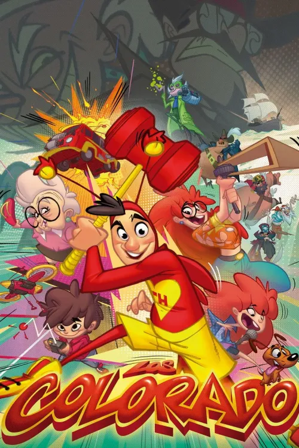
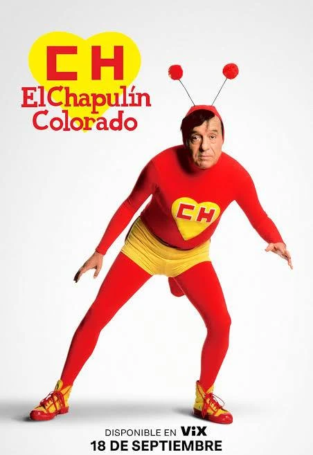
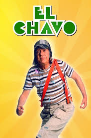
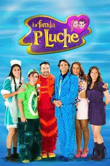
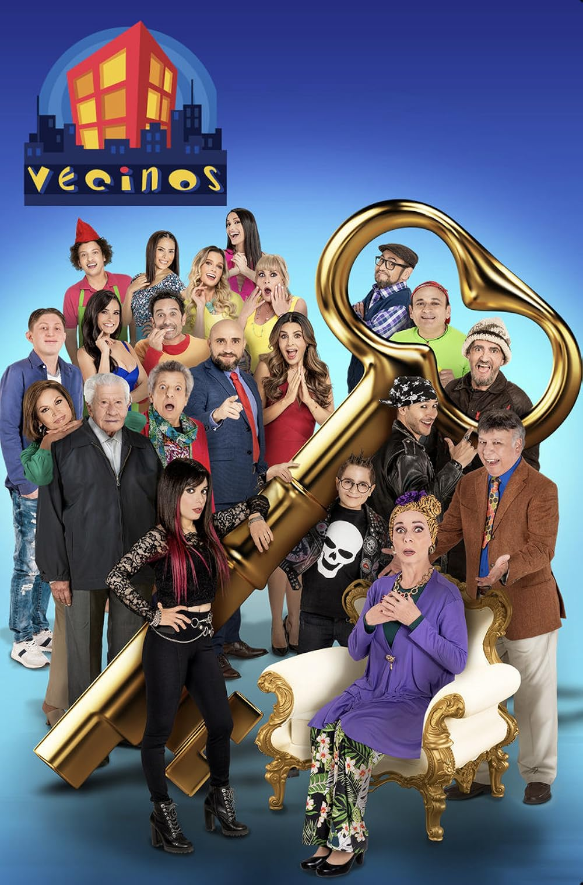
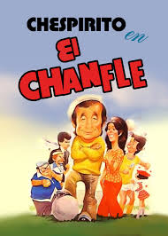

LOS COLORADOS
Chapulín Colorado y su familia abordan a los villanos y las tareas diarias con humor y corazón, demostrando cómo el ingenio y la compasión pueden superar cualquier desafío.
- Género: Animación
- Año: 2025
- Duración: 1 temporada
- Director: Gabriel Riva Palacio Alatriste y Rodolfo Riva Palacio Alatriste
- Productores/as: Roberto Gómez
- Calificación general: 7.9/10
- Clasificación por edad: +10
- Plataformas: HBO MAX
Tráiler
REPARTO
JESUS GUZMAN
VERONICA BRAVO
REGINA CARRILLO
JORGE LEMUS
GABRIEL RIVA
RESEÑAS DESTACADAS
Calificación: 9.0 / 10

HumorLatino dice:
Un regreso lleno de nostalgia.
"La serie logra capturar el espíritu del Chapulín Colorado con un aire renovado. El humor absurdo sigue funcionando y las referencias clásicas generan una gran conexión con los fans de toda la vida."
Calificación: 7.0 / 10
CriticoTV dice:
Entretenida, pero con altibajos.
"El humor sigue siendo efectivo, pero algunos episodios caen en fórmulas repetitivas. Aun así, es un placer ver cómo se actualiza un personaje tan icónico para nuevas generaciones."
Calificación: 8.0 / 10
FanDelChapulin dice:
El espíritu original sigue vivo.
"La serie conserva el estilo irreverente y las frases clásicas del Chapulín. El ritmo es ágil y las actuaciones transmiten autenticidad. ¡No contaban con mi astucia!"
Calificación: 7.5 / 10
CineGeek dice:
Gran homenaje, pero ritmo irregular.
"Algunos episodios son brillantes, pero otros se sienten más flojos. El humor absurdo sigue funcionando, aunque la narrativa a veces pierde fuerza. Aun así, es un homenaje digno."
Calificación: 6.5 / 10
TeleFan dice:
Un regreso que pudo ser más sólido.
"Aunque es agradable ver de nuevo al Chapulín, la trama principal se siente algo forzada. El humor está presente, pero esperaba un guion más fresco y arriesgado."
RELACIONADOS

EL CHAPULÍN COLORADO
Calificación: 8.2/10
DURACION: 8 temporadas

EL CHAVO DEL 8
Calificación: 8.5/10
DURACION: 9 temporadas

LA FAMILIA PELUCHE
Calificación: 7.9/10
DURACION: 3 temporadas

VECINOS
Calificación: 7.4/10
DURACION: 10 temporadas
